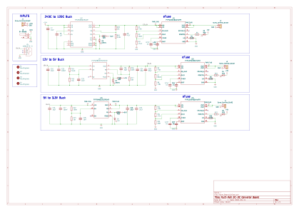

01Overview
Working at the R&D bench at Sable Systems, I frequently test and prototype new hardware architectures. I quickly grew tired of cluttering my workspace with three or four separate benchtop power supplies just to run a quick evaluation. To streamline my workflow, I designed and built this custom Multi-Rail Power Distribution Board (PDB) in KiCad — cascading a single 24V input into 12V, 5V, and 3.3V rails from one compact board.
02Problem & Motivation
Every quick bench evaluation meant dragging out three or four separate supplies, cluttering the workspace and slowing down iteration. I wanted one compact, high-current board that could sit permanently on my desk and confidently power anything I was prototyping — from sensors to motors — without swapping supplies or worrying about voltage drop or thermal limits. I intentionally over-engineered the current capacity so it could drive demanding loads like cooling fans, pneumatic valves, or larger motors without hesitation.
03Interactive Media
Explore the assembled board render, or pan/zoom the full KiCad layout export.
Click-drag to pan · scroll to zoom

Click-drag to pan · scroll to zoom
04Technical Details
- Cascades a single 24V input down to 12V, 5V, and 3.3V rails using high-efficiency switching buck regulators.
- Over-engineered for headroom: large copper polygon pours support up to 3A per rail for demanding loads like cooling fans, pneumatic valves, and motors.
- TI TPS25948 eFuses with custom UVLO thresholds and active-low fault indicator LEDs catch overcurrent events immediately during bench testing.
- Keyed connectors, a 24V barrel jack input, and a USB-A output (for a simple 5V charger or powering an MCU) keep the bench wiring simple and foolproof.
05What I Learned
This was a highly rewarding project, and I couldn't have successfully routed and finalized the design without the invaluable mentoring from Ronald and Scott. Working through their feedback taught me as much about production-quality routing and layout discipline as any class could have.
06Next Steps
Having a dedicated, high-current PDB on my desk has already drastically reduced my setup times, and I have several more custom PCBs in the pipeline to further accelerate my hardware development cycle.